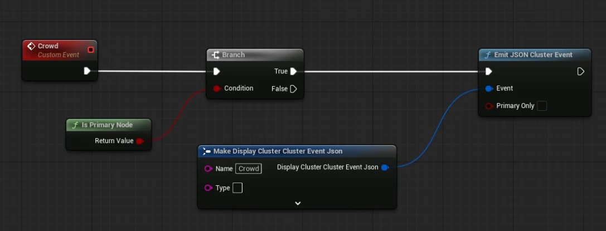

작업 요약
- 제작
- W24 뮤직비디오의 스타디움 환경과 움직이는 군중을 제작했다.
- 담당
- Virtual Art Department Lead로 제작 방향과 역할 분담, 구조물 제작과 메인 라이팅 및 군중 제어를 맡았다.
- 기술
- 스플라인 배치 · AnimToTexture Bone 모드 · 인스턴싱 · nDisplay Cluster Event
- 결과
- 좌석에 군중을 자동 배치하고 현장에서 표시 명령과 손의 이미시브를 이용한 응원봉 표현을 적용했다.
전체 레이아웃과 잔디 및 골대는 다른 팀원이 제작했다. 별도의 성능 개선 수치는 제시하지 않는다.
제작 과정
W24 뮤직비디오에 사용할 스타디움 환경에서 Virtual Art Department Lead를 맡아 제작 방향과 역할을 나누고 구조물 모델링, 텍스처링, 메인 라이팅을 담당했다. 관중석 의자와 군중을 배치하는 Blueprint를 만들고 기존 VAT 도구를 수정해 애니메이션을 적용했으며 ICVFX 현장에서는 군중 표시와 응원봉 표현을 추가했다.
환경 제작
AI로 스타디움 컨셉을 여러 가지 만들어 제안한 뒤 필요한 모듈과 제작 방식을 정하고 팀원들과 작업을 나눴다. 건물 코너와 관중석 모듈 약 3종을 Blueprint로 배치해 환경을 구성하고 구조물 모델링과 텍스처링을 맡았으며 전체 레이아웃과 잔디, 골대는 다른 팀원이 제작했다.

의자 배치
관중석에 의자를 많이 배치해야 해 Top과 Bottom 스플라인 사이에 행 수와 간격을 조절하는 Blueprint를 만들었다. 포인트로 배치 위치를 확인하면서 열린 의자와 접힌 의자의 메시·머티리얼, 크기와 위치를 파라미터로 바꿀 수 있게 했다.
의자 색은 약 3가지 중 무작위로 적용했고 모든 좌석이 채워지면 부자연스러워 보여 접힌 의자도 섞었다. 접힌 좌석에는 군중이 생성되지 않도록 연결했다.


VAT 군중 제작
ICVFX 환경에서 많은 군중을 재생하면 프레임 부담이 커질 수 있어 VAT를 적용했다. 기존 AnimToTexture 도구를 프로젝트에 맞게 수정하고 캐릭터 6종의 애니메이션을 베이킹했다.
Bone 모드로 본의 위치와 회전, 가중치 정보를 텍스처에 저장했다. 캐릭터별 데이터 에셋에 메시와 텍스처, 재생 정보를 연결하고 머티리얼에서 데이터를 읽어 WPO로 애니메이션을 재생했다.
군중은 열린 의자의 위치와 회전을 따라 배치했다. 같은 동작이 반복돼 보이지 않도록 애니메이션 종류와 시작 시점을 무작위로 섞었고 촬영에 사용할 군중은 인스턴스로 미리 베이크했다.


군중 표시 제어
리허설 중 감독이 원하는 타이밍에 군중을 보여줘야 했다. 처음에는 명령어를 입력할 때마다 군중을 생성했는데 이 과정이 오래 걸려 미리 만들어 둔 군중 레벨에서 표시만 바꾸도록 수정했다.
메인 레벨에서 Primary Node인지 확인한 뒤 Crowd JSON Cluster Event를 보내면 군중 Blueprint가 이벤트를 받도록 연결했다. Switchboard에서 명령어를 입력하면 촬영 시점에 맞춰 군중이 나타난다.


응원봉 표현
촬영 직전 일부 군중에 응원봉 효과를 추가해야 했지만 새 모델을 만들 시간은 부족했다. UV 마스크로 캐릭터 손 부분을 분리해 이미시브를 적용했다. 발광 여부와 왼손·오른손을 무작위로 정해 일부 군중만 빛나도록 했다.
참여 정보
Virtual Production · Westworld
Virtual Art Department Lead · 이도한
Virtual Art Department · 김연욱, 이성지
촬영 스튜디오 · 문경 버추얼 스튜디오